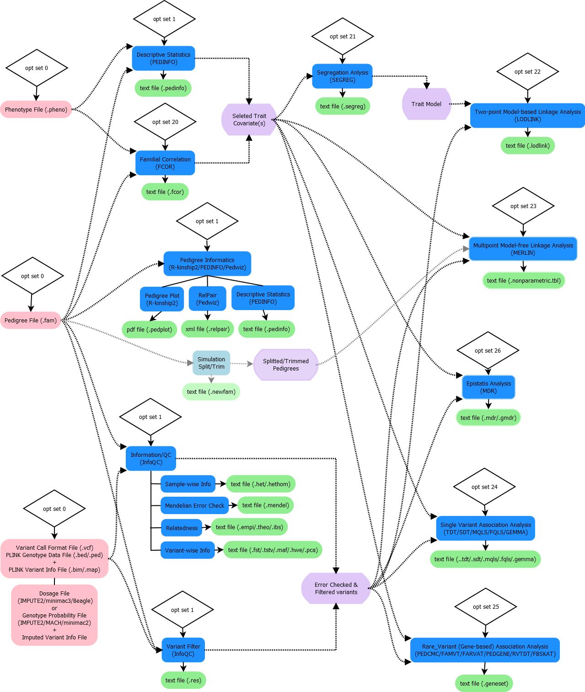

Overview¶
ONETOOL is a tool for family-based big data analyses. It implements the properties of well-known existing family data analysis tools and recently developed methods in a computationally efficient manners, so is suitable for analyzing the vast amount of variant data availble from sequencing family members, providing a rich choice of analysis methods for big data from families.
Overall workflow in ONETOOL is:
{kind=link}
Input¶
ONETOOL supports two different sets of input files, PLINK set and VCF set. The PLINK set consists of three files (i.e., .fam, .bed, and .bim) that are used to run PLINK, and the VCF set con-sist of a plink format family file (.fam) and a Variant Call Format (.vcf). The additional phenotypes and covariates are supported through an optional input file (.pheno) for both sets of input files.
ONETOOL also support two different ways to specify the desired analysis options, through a command line and a script file.
The full list of data types and input file formats supported can be found in Input.
Features¶
The main features in ONETOOL are:
InfoQC analysis
- Variant information
- Sample information
- Pedigree information
- Mendelian error detection
- Relatedness matrix
- Pedigree plot
Trait analysis
- Familial Aggregation
- Heritability
- Segregation Analysis
Linkage analysis
- Model-based
- Model-free
Association analysis
- Single variant - common variant
- Gene-based - rare variant
- Dosage data
Epistasis analysis
- Multidimensional Dimensionality Reduction (MDR) analysis
- Generalized MDR analysis
Imputation of missing genotype
Data management
- Variant filtering
- Sample filtering
- LD-based prunning
Output¶
Each method in ONETOOL outputs the result file with the appropriate extension, so that the user can recognize it easily. It has the familiar user interface and the same or similar analysis option names as the existing tools, so no, or only a minimal, learning curve is needed.